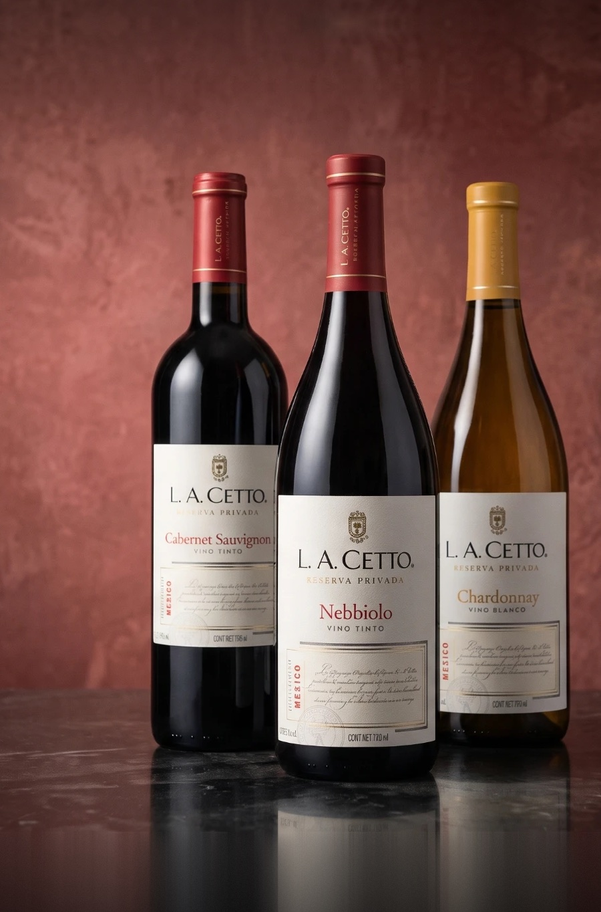
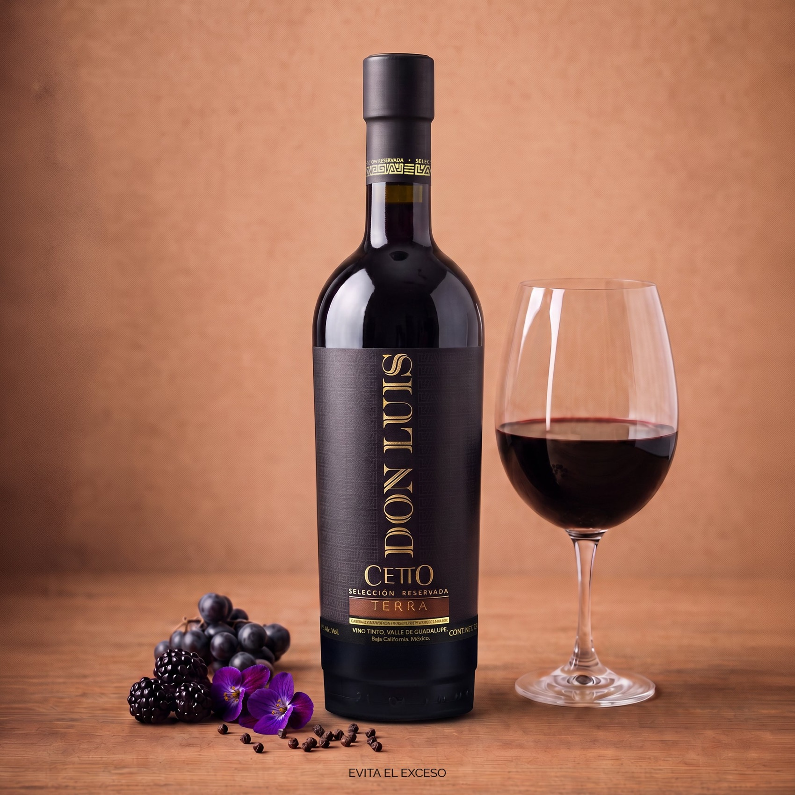
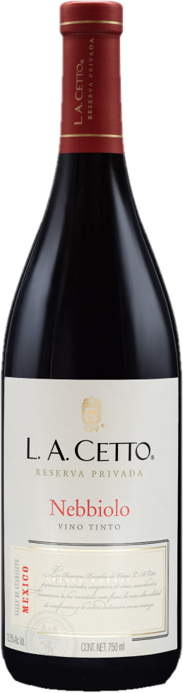

L.A. Cetto · Reserva PrivadaReserva Privada
Aquí están el Nebbiolo, nuestro vino más reconocido fuera de México, y el Chardonnay, uno de los primeros blancos con barrica del país.
Los vinos que llevaron el nombre de la familia a los concursos más exigentes del mundo, nacidos en el Valle de Guadalupe.

L.A. Cetto · Reserva PrivadaAquí están el Nebbiolo, nuestro vino más reconocido fuera de México, y el Chardonnay, uno de los primeros blancos con barrica del país.

Don Luis · Selección ReservadaLa expresión más alta de la cava: Terra, la mezcla bordelesa de la casa; Concordia, con 12 meses de barrica, y el Viognier más premiado de México.
De Vinitaly a San Francisco: estos son los vinos que más medallas han sumado.
El New York International Competition ha distinguido a la casa como la mejor bodega mexicana en diez ediciones.
Y al frente de todos, el más premiado de la familia.

Con un delicado toque floral de jamaica.
Taninos firmes, gran complejidad y un final largo. 14 meses en barrica de roble francés.
Cortes de carne, platillos especiados y quesos maduros.
Reserva Privada y Don Luis, junto a los vinos más premiados de la casa.

Desde 1928, la familia Cetto lleva el vino mexicano a competir en el mundo. El Nebbiolo Reserva Privada suma 163 reconocimientos; Don Luis reúne lo más alto de nuestra cava.
Hoy son 1,200 hectáreas en el Valle de Guadalupe y 26 varietales que llegan a más de 20 países.
Conoce nuestra trayectoriaEn el canal de la bodega hay más de cien videos: notas de cata oficiales, la serie Catas contigo y maridajes con cocina mexicana. Descorcha y cata con nosotros.